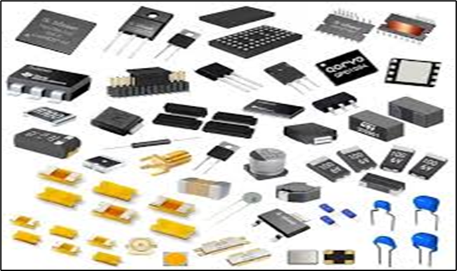
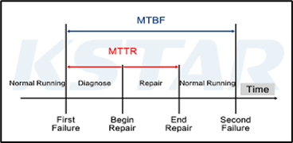

Component Engineering

BOM Analysis / Risk assessment
- Pricing
- Leadtime
- MOQ/SPQ
- Grade
- Environmental compliance (ROHS/WEEE)
- Material Declaration
- Lead Finish
- Soldering profile
- End of life
- Thermal

Alternate Part Selection
- Qualification of Alternate Components
- Critical tests
- Electrical test
- Burn-in Test
- Environmental Test
- ECN management
- Root cause failure analysis
- Support on Reliability, Thermal and Packaging information

Component Library Management
- Component Reuse
- Cost benefit
- Quality experience
- Quick search
- Symbols, footprints, and 3D models
- Reduce part duplications
- Drive scalability
- Correct manufacturer part numbers
- Datasheet access
- Searchability through categorization
- Redundancy elimination
- Lifecycle status